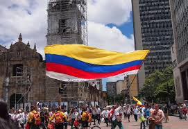
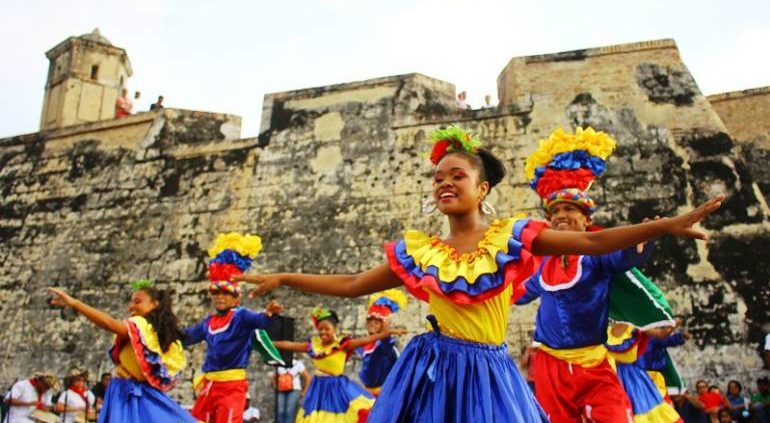
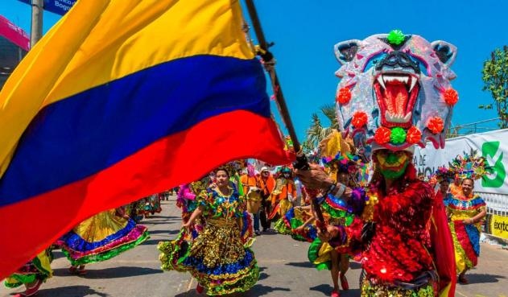
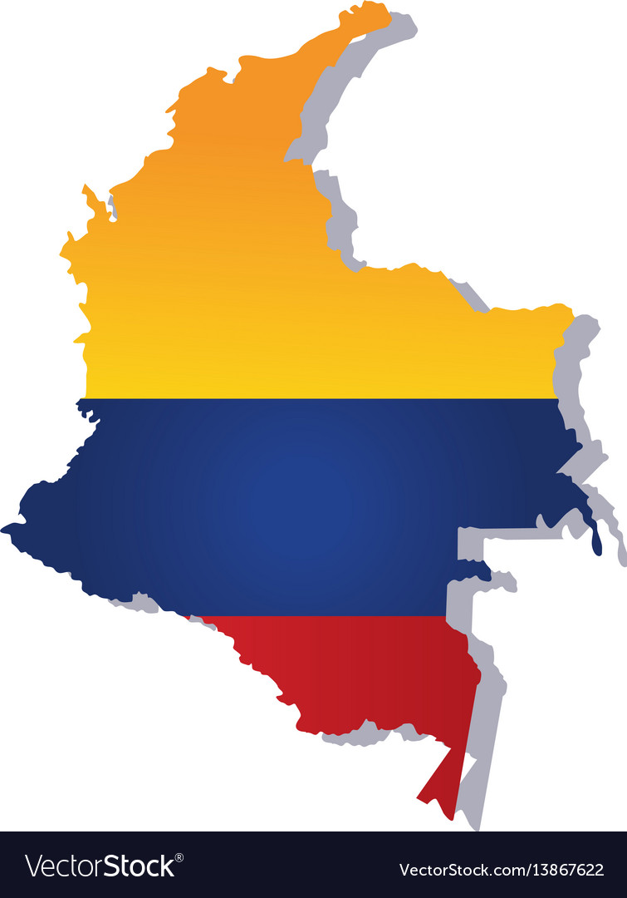
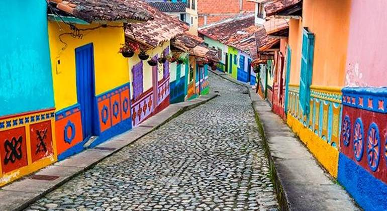

Colombia es una economía emergente y una potencia económica de la región. También forma parte del bloque de países
emergentes CIVETS, de la Organización Mundial del Comercio (OMC) y de la Organización para la Cooperación y el
Desarrollo Económicos (OCDE). Su PBI PPA ocupa el cuarto puesto en América Latina detrás de Argentina, México y
Brasil, además de ser el 28 a nivel global. El PBI nominal colombiano es el cuarto más alto de América Latina después
de los de Brasil, México y Argentina, y ocupa el puesto 29 a nivel mundial. El sector financiero en la nación ha
crecido un 6.7 % entre el 2005-2010, debido a la liquidez favorable de la economía colombiana. En 2012 el sector de
servicios representó el 55.1 % del PIB de Colombia, mientras que 68 % de 23.08 millones de colombianos formaron parte
de la fuerza laboral en este sector. La economía de Colombia ha experimentado un crecimiento promedio anual de 5.5 %
desde 2002. En el 2012, 23.8 millones de colombianos sirvieron como fuerza laboral en la economía, con un ingreso
promedio de US$10 700, produciendo US$500 000 millones para el Producto Interno Bruto (PIB) del país. Sin embargo,
la desigualdad en la distribución de riqueza mantiene a un 29.3 % (2014) de colombianos viviendo por debajo de la
línea de pobreza nacional, a lo que se suma el deficiente sistema pensional. Desde 2011 desempleo ha marcado un
dígito, (9.2 % en noviembre de 2011) y el subempleo un 32.7 % (noviembre de 2011).
|
Las culturas indígenas asentadas en el país a la llegada de los españoles, la cultura europea (de España y de otros lugares de Europa), y las culturas africanas importadas durante la Colonia son la base de la cultura colombiana, la cual también comparte rasgos fundamentales con otras culturas hispanoamericanas en manifestaciones como la religión, la música, los bailes, las fiestas, las tradiciones, el dialecto, entre otras.
Culturalmente, Colombia es un país de regiones en el que la heterogeneidad obedece a variados factores como el aislamiento geográfico y la dificultad de acceso entre las diferentes zonas del país. Las subregiones o grupos culturales más importantes son los «cachacos» (ubicados en el altiplano cundiboyacense), los «paisas» (asentados en Antioquia y el Eje Cafetero), los «llaneros» (habitantes de los Llanos Orientales), los «vallunos» (zona del Valle del Cauca), los «costeños» (ubicados en la Costa Caribe), y los «santandereanos» (ubicados en los departamentos de Santander y Norte de Santander); entre otros, cuyas costumbres varían según sus influencias y ascendencias. |
 |
 | |
| El teatro fue introducido durante la colonización española a partir de 1560 con compañías de zarzuela. El teatro en Colombia es principalmente apoyado por el Ministerio de Cultura y por diferentes entidades de carácter estatal o privado afiliadas. |
Los orígenes de la literatura colombiana se remontan a los tiempos de la colonia española, período en el que se destacan Hernando Domínguez Camargo, con el Poema Épico a San Ignacio de Loyola, Juan Rodríguez Freyle (El Carnero) y la monja Francisca Josefa del Castillo representante del misticismo. En la literatura de post-independencia ligada al Romanticismo se destacaron Antonio Nariño, José Fernández Madrid, Camilo Torres Tenorio y Francisco Antonio Zea. |  | |
|  Colombia es en la actualidad el segundo país del mundo con mayor cantidad de hispanohablantes después de México. El artículo diez de la Constitución Política de Colombia establece que el idioma español es el oficial del país, así como también lo son en sus respectivos territorios las lenguas y dialectos de los grupos étnicos. En el archipiélago de San Andrés y Providencia el idioma inglés es hablado por los habitantes nativos y es idioma oficial local. | |||